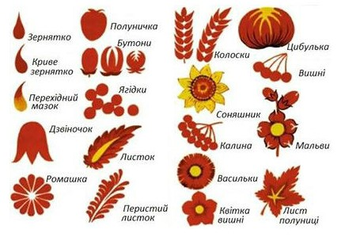

Історія та походження
Петриківський розпис виник у селі Петриківка на Дніпропетровщині. Він зародився як спосіб прикрашення хати: на стінах, пічках та побутових предметах з’являлися яскраві квіткові орнаменти. Традиція передавалася з покоління в покоління.
Техніки та символіка
Для створення розпису використовують пензлики з котячої шерсті або звичайні палички. У центрі орнаментів часто зображують рослинність, птахів та квіти, які символізують гармонію, мир і життя.
Сучасне використання
Сьогодні Петриківський розпис використовують у дизайні інтер’єру, сувенірів та навіть модному одязі. Він також є офіційно визнаною частиною нематеріальної культурної спадщини ЮНЕСКО.